Elegí tu producto en Tiendanube
Revisá fotos, precio, variantes y stock. Copiá el enlace de su ficha pública.
TU PRODUCTO · TU PROMOCIÓN · TU TIENDANUBE
Elegí un producto de tu Tiendanube, prepará una promoción y creá anuncios con IA usando sus fotos. Después, revisá que quien haga clic encuentre el mismo producto, precio y beneficio en tu tienda.
32 ideas de anuncios · Guías de Tiendanube · Prompts con tus datos
Un recurso de The Net Lab en colaboración con Tiendanube. La imagen se genera en la herramienta de IA que elijas, con las fotos y los datos que vos aportás.
Tu foto + tu oferta
30% OFFOferta de demostración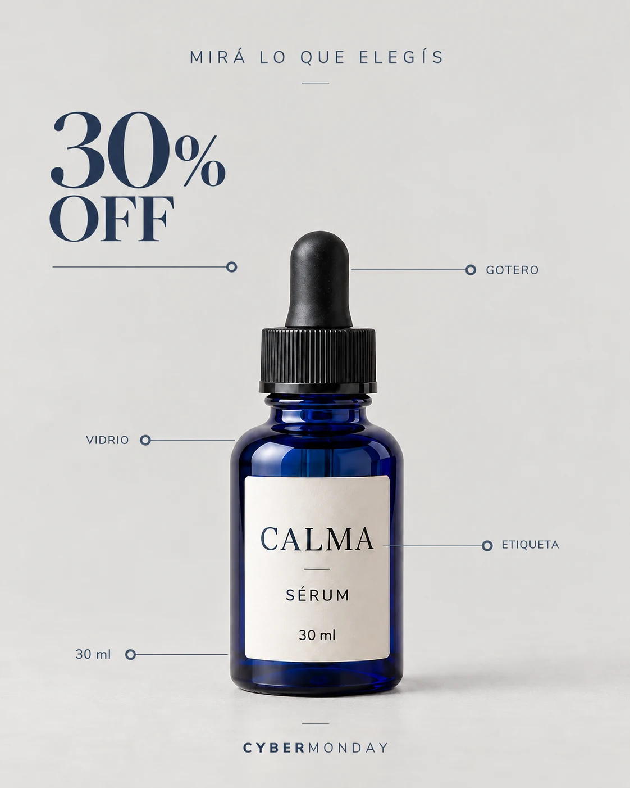
↳ El titular y el recurso creativo se conservan. La oferta se integra.
Partimos de la foto de arriba para producir estas cuatro composiciones. CALMA, la foto y el 30% OFF son de demostración; no son una promoción vigente. La IA requiere revisar la fidelidad del producto.
EMPEZÁ ACÁ / ASÍ SE USA
Trabajá sobre un producto que quieras promocionar en tu Tiendanube. Copiá sus datos al formulario y prepará las fotos originales. La URL sirve para organizar el destino del anuncio; los datos se completan manualmente.
Revisá fotos, precio, variantes y stock. Copiá el enlace de su ficha pública.
Definí cómo se obtiene el beneficio en Tiendanube: precio, cupón, pago, cantidad o envío.
Descargá la referencia. Adjuntala junto con tu foto y pegá el prompt de la ficha.
Abrí el producto desde el enlace del anuncio y comprobá el beneficio en el carrito.
Producto: sérum CALMA.
Promoción de demostración: 30% OFF como precio promocional en Tiendanube.
Foto: el frasco de frente.
Idea elegida: Titular interrumpido.
Si cambia la etiqueta: usamos la corrección de producto. Si sigue cambiando, recortamos la foto original y la colocamos sobre el diseño en un editor, sin volver a dibujar el frasco.
Este es un recorrido explicado con datos ficticios; no representa una tienda ni una promoción activa. Cada generación puede necesitar correcciones.
ANTES DE CREAR EL ANUNCIO
Elegí cómo vas a ofrecer el beneficio. Configuralo en tu tienda y usá esas mismas condiciones en el anuncio. Estas guías oficiales te llevan al procedimiento de Tiendanube.
Completá el precio promocional y revisá cómo se ve en la ficha. El anuncio debe usar la misma modalidad de pago y las mismas condiciones.
Ver guía de precios promocionales ↗Definí el beneficio, alcance y vigencia del cupón. Incluí el código en el anuncio cuando sea necesario para obtenerlo.
Ver guía de cupones ↗Indicá si requiere transferencia, cierta cantidad de productos o un monto mínimo. Comprobá en el carrito que se aplique como lo comunicás.
Ver opciones de promociones ↗01 / ELEGÍ UN PRODUCTO DE TU TIENDANUBE
Copiá los datos de tu producto y su promoción. Te sugerimos ideas compatibles con tus fotos y sumamos las condiciones de compra a las instrucciones para la IA.
Para un pack, variantes o un detalle pueden hacer falta otras fotos o datos, aunque estén en un mismo archivo. Revisá los requisitos de cada ficha.
Momento = cuándo vas a usar el anuncio. Motivo = por qué elegir este producto. Diseño = cómo lo mostramos. Oferta = qué beneficio comercial está vigente.
Podés explorar distintas formas de mostrar tu producto. Cuando quieras entender el efecto de un cambio puntual, usá una prueba controlada.
Adaptación educativa propia de The Net Lab a partir de la lógica de momentos × razones de compra de Nu Reach Media ↗. Las composiciones provienen de la curaduría de Pinterest de este recurso. No replicamos sus titulares ni sus promesas de rendimiento.
04 / REVISÁ EL ANUNCIO
No hace falta reconstruir la composición a mano. Sí hace falta verificar lo que la IA devuelve: compará el anuncio con el archivo original, a tamaño completo y en la pantalla del teléfono.
↳ Revisá el anuncio al lado de tu foto original.
0 de 6 controles revisados
Cambió el producto: abrí la corrección de producto en la ficha y adjuntá referencia, foto original y resultado. Si vuelve a cambiar, recortá la foto original y colocala sobre el diseño en un editor.
No se lee: pedí menos texto y letras más grandes, sin cambiar los datos.
La promoción es incorrecta: actualizá tus datos y usá la corrección de texto y cifras.
Antes de usarlo: descargá la imagen desde la herramienta y revisá el recorte en el formato donde la vas a publicar.
05 / DEL CLIC A LA COMPRA
Abrí el enlace del producto desde tu teléfono y recorré la compra hasta revisar el carrito. No hace falta pagar para comprobar estos puntos. Marcá lo que revisaste vos.
Completá el enlace del producto para preparar este paso.
0 de 6 puntos revisados por vos.
La conexión del catálogo con Meta es un paso diferente de crear estas imágenes. Seguí la guía oficial si vas a usar esa integración para tus campañas.
Ver cómo conectar Facebook e Instagram con Tiendanube ↗06 / PREPARÁ LA SIGUIENTE VERSIÓN
Conservá el producto y la promoción. Elegí otro motivo real para comprar o una composición diferente. Anotá qué cambiaste y qué querés aprender. Para atribuir un resultado a un cambio puntual, necesitás una prueba controlada.
Anotá la idea, el mensaje, el producto y la fecha. Si usás el anuncio en una campaña, registrá cuánto gastó, cuántas compras consiguió y el costo por compra.
Los anuncios pueden recibir distinta inversión. Antes de sacar conclusiones, mirá cuánto gastó cada uno y cuánto tarda tu cliente en decidir. Para comparar un cambio específico, prepará una prueba A/B: dos versiones que difieren solo en lo que querés evaluar.
Ningún diseño garantiza ventas. La inversión, la oferta, la tienda y el contexto también influyen. Lectura complementaria: Meta Blueprint: cómo evaluar anuncios ↗.
PARA SEGUIR EXPLORANDO / 32 IDEAS
Elegí otra composición cuando termines la primera. Las ideas de Navidad usan las mismas fichas y los datos de tu producto en Tiendanube. Los filtros son para explorar: revisá los requisitos de cada idea antes de generarla.
Elegí la versión con o sin promoción. Cada ficha usa tus datos actuales.
Probamos cuatro composiciones con otros rubros. Algunas necesitaron corregir el prompt y repetir. Los ejemplos documentan esas limitaciones; no garantizan que toda generación salga bien.
Elegí qué querés destacar del producto, además de la promoción.
El producto se mete en la conversación.
Simplificar una rutina o desafiar una objeción.
Una foto frontal de alta resolución.
Tapar letras esenciales o la etiqueta.
Descargar referencia visual · Ver referencia original de Pinterest
Descargar instrucciones con promoción · Descargar instrucciones sin promoción
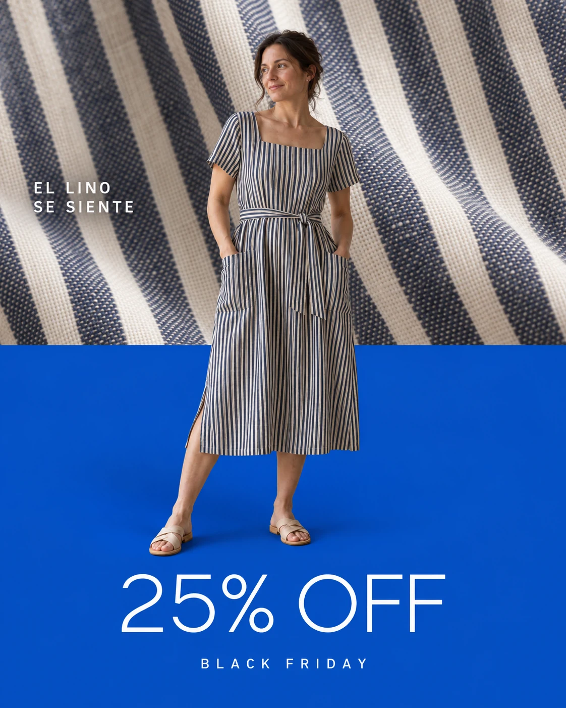
La textura se siente antes de explicarse.
Material, terminación o experiencia sensorial real.
Foto del producto y macro real del material o textura.
Inventar textura o alterar el estampado.
Descargar referencia visual · Ver referencia original de Pinterest
Descargar instrucciones con promoción · Descargar instrucciones sin promoción
Una pieza resuelve una necesidad concreta.
Completar un set, una rutina o un regalo.
Una foto recortable; segunda foto opcional del complemento real.
Sugerir curación o una transformación no demostrada.
Descargar referencia visual · Ver referencia original de Pinterest
Descargar instrucciones con promoción · Descargar instrucciones sin promoción
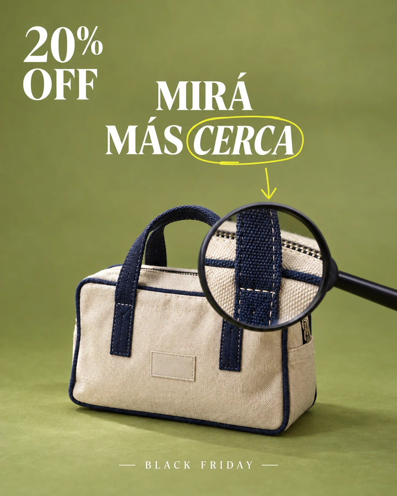
El detalle hace tangible el valor.
Acabado, cierre, costura o ingrediente indicado en etiqueta.
Foto completa y macro o archivo suficiente para ampliar sin perder definición.
La IA inventa lo que no se alcanza a ver.
Descargar referencia visual · Ver referencia original de Pinterest
Descargar instrucciones con promoción · Descargar instrucciones sin promoción
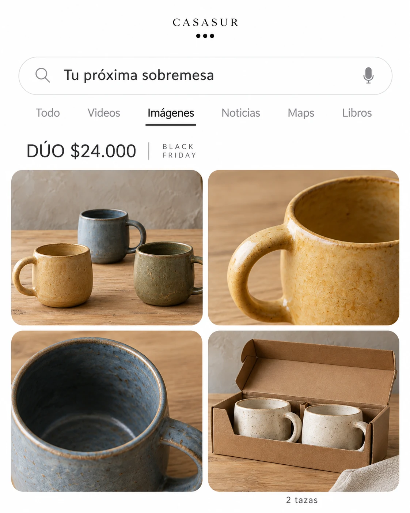
Una intención de búsqueda se vuelve selección visual.
Encontrar un regalo o un producto para una situación.
Hasta cuatro fotografías reales; puede repetirse un recorte con detalles visibles.
Imitar un buscador real o inventar resultados/reseñas.
Descargar referencia visual · Ver referencia original de Pinterest
Descargar instrucciones con promoción · Descargar instrucciones sin promoción
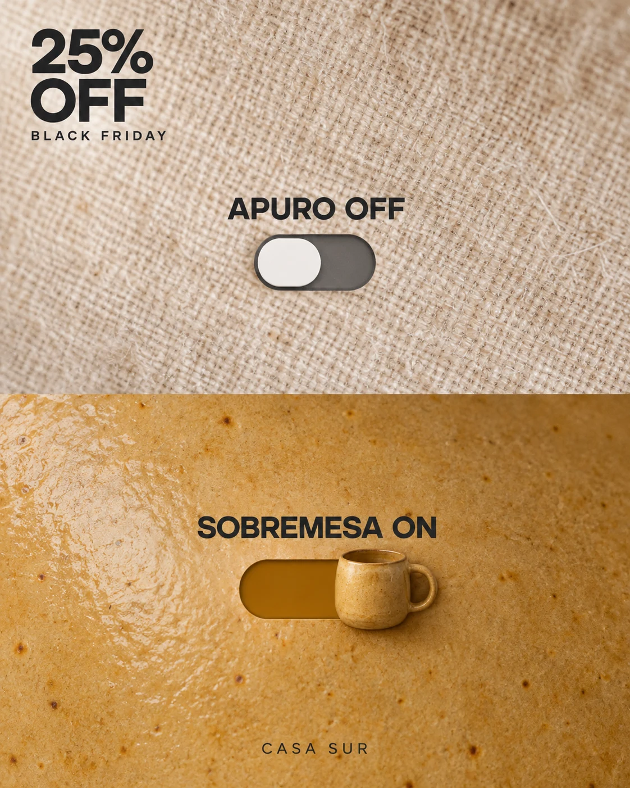
El interruptor representa una elección.
Activar una ocasión: modo regalo, modo descanso, modo salida.
Una foto; dos escenas reales solo si se desea comparar contextos.
Convertir la metáfora en un antes/después corporal.
Descargar referencia visual · Ver referencia original de Pinterest
Descargar instrucciones con promoción · Descargar instrucciones sin promoción
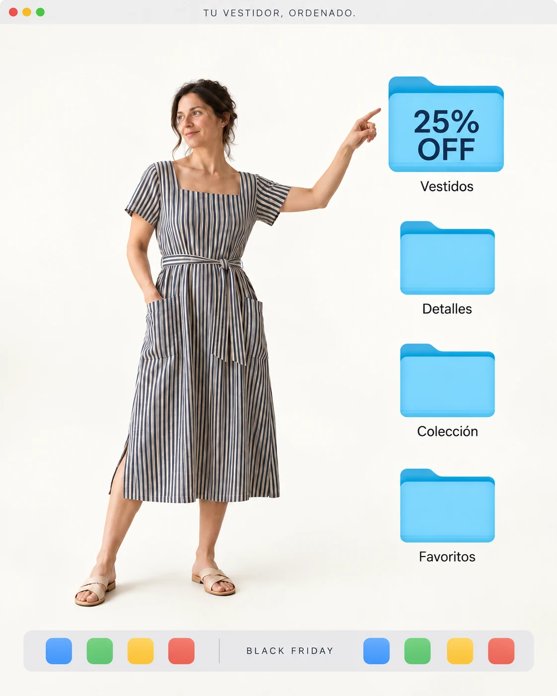
Un escritorio organiza las ocasiones de compra.
Ordenar una colección por ocasión o destinatario.
Foto real en uso autorizada y selección real por carpeta.
Inventar gestos, modelos o contenido de la colección.
Descargar referencia visual · Ver referencia original de Pinterest
Descargar instrucciones con promoción · Descargar instrucciones sin promoción
El producto se convierte en ficha de un juego.
Elegir un favorito o comunicar compra por cantidad real.
Una foto recortable; repetir no implica que se venda un pack.
Interpretar la repetición como oferta 3x1 inexistente.
Descargar referencia visual · Ver referencia original de Pinterest
Descargar instrucciones con promoción · Descargar instrucciones sin promoción
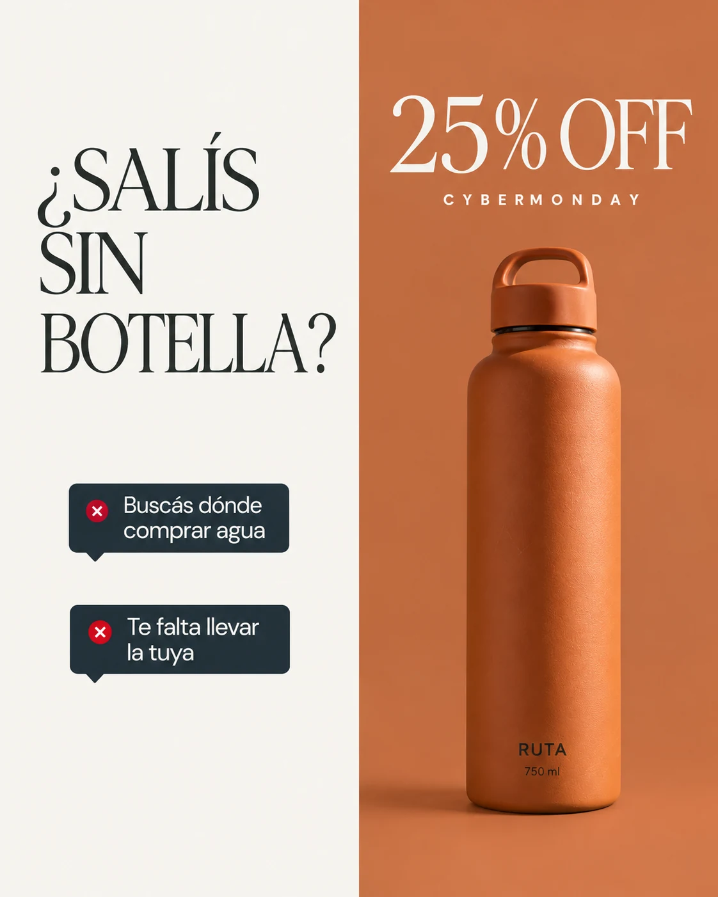
Una fricción concreta encuentra una respuesta.
Resolver una objeción de uso con atributos comprobables.
Una foto y dos pares problema/respuesta respaldados.
Promesas absolutas o listas demasiado largas.
Descargar referencia visual · Ver referencia original de Pinterest
Descargar instrucciones con promoción · Descargar instrucciones sin promoción
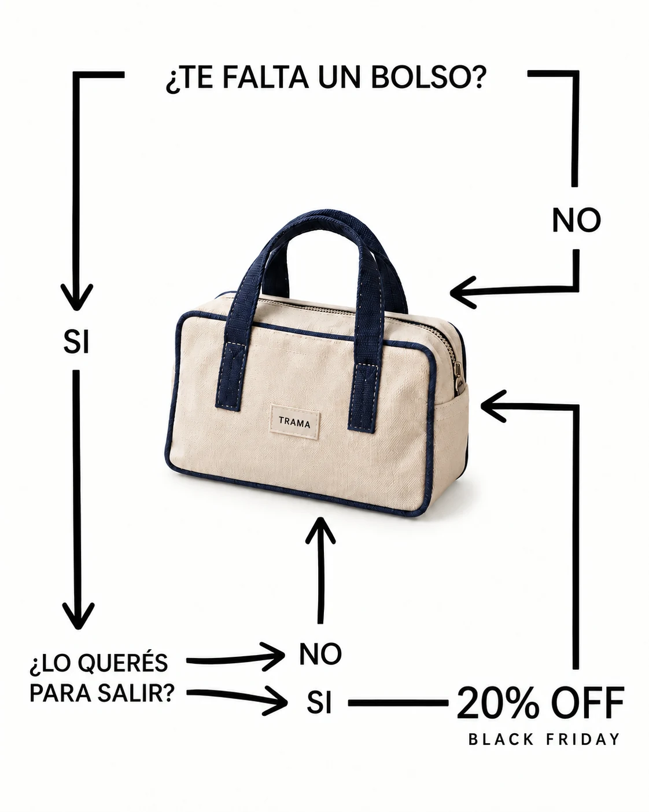
Un recorrido de decisiones lleva al producto.
Facilitar la elección de un regalo o una necesidad cotidiana.
Una foto y preguntas que tengan sentido para la oferta.
Flechas incoherentes o falsa personalización.
Descargar referencia visual · Ver referencia original de Pinterest
Descargar instrucciones con promoción · Descargar instrucciones sin promoción
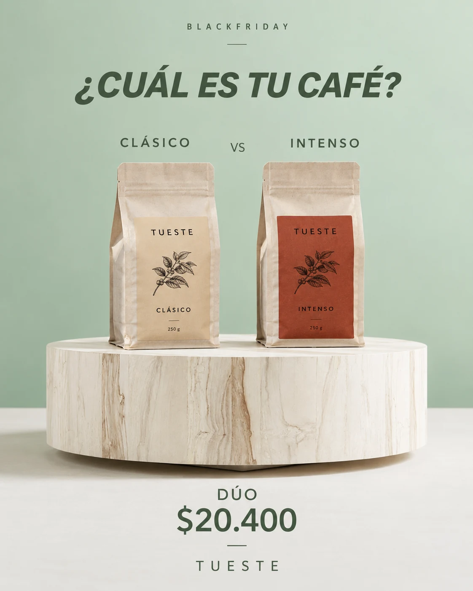
Dos opciones de la marca responden a necesidades diferentes.
Comparar tamaños, modelos o sabores existentes.
Foto real de cada una de las dos opciones.
Inventar la segunda variante o copiar personajes ajenos.
Descargar referencia visual · Ver referencia original de Pinterest
Descargar instrucciones con promoción · Descargar instrucciones sin promoción
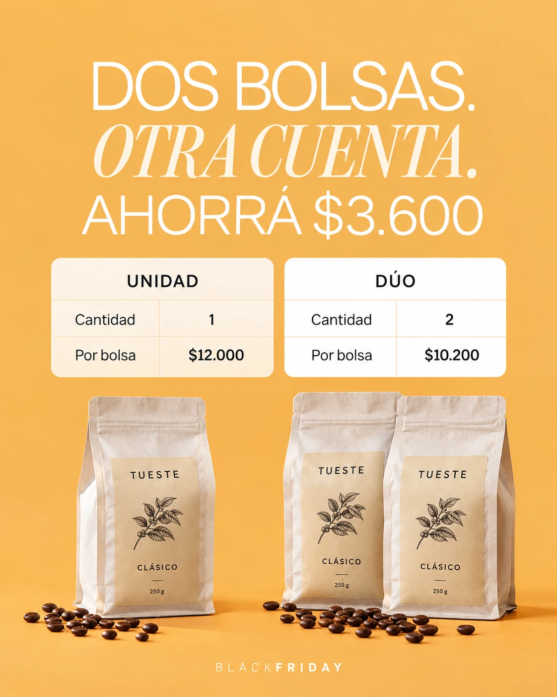
Una tabla hace visible una diferencia de compra.
Comparar compra individual y pack, o dos modalidades reales.
Una foto y tres criterios verificables para ambas modalidades.
Difamar competidores o inventar ahorros y servicios.
Descargar referencia visual · Ver referencia original de Pinterest
Descargar instrucciones con promoción · Descargar instrucciones sin promoción
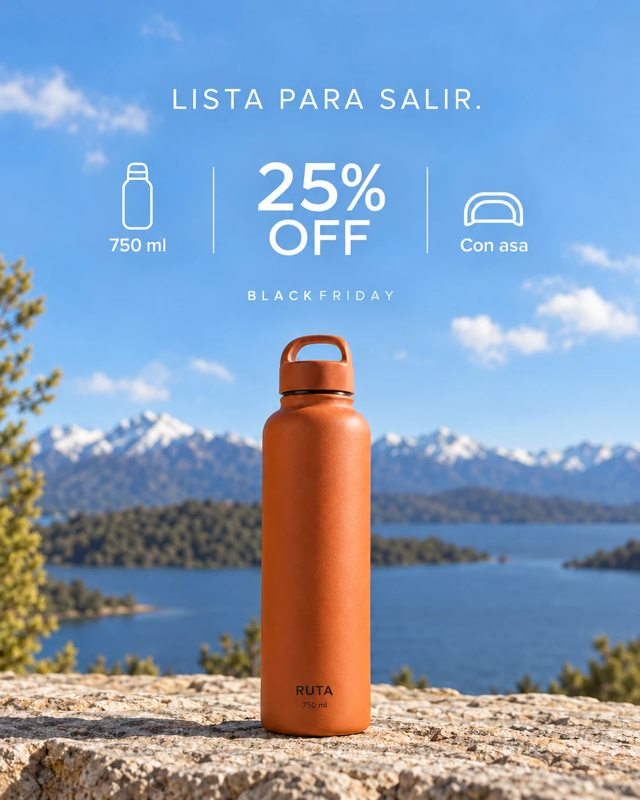
Los beneficios se leen como símbolos, la foto aporta realidad.
Comunicar portabilidad, capacidad o facilidad de uso.
Foto en uso real con espacio superior o foto recortable sin manos inventadas.
Iconos que parecen sellos de certificación.
Descargar referencia visual · Ver referencia original de Pinterest
Descargar instrucciones con promoción · Descargar instrucciones sin promoción
Cada señal apunta a una característica física.
Explicar cierre, material, capacidad o piezas reales.
Foto frontal y tres atributos visibles o documentados.
Señalar zonas incorrectas o inventar materiales.
Descargar referencia visual · Ver referencia original de Pinterest
Descargar instrucciones con promoción · Descargar instrucciones sin promoción
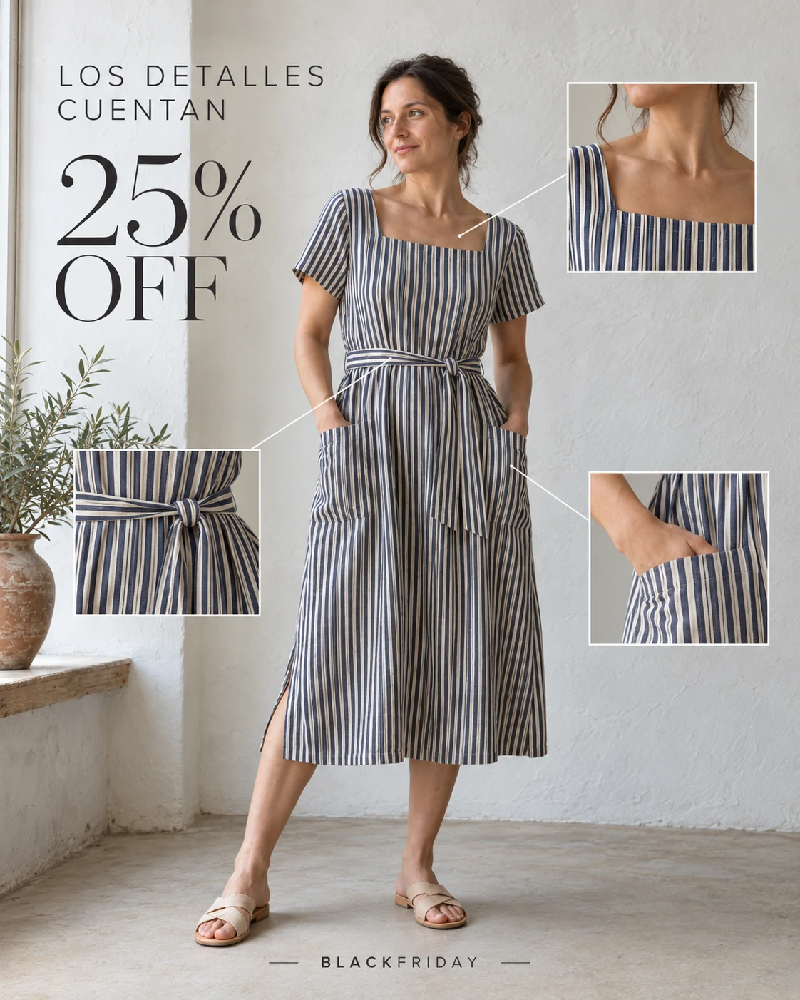
La foto completa y sus detalles cuentan una sola historia.
Mostrar costuras, herrajes, terminaciones o dimensiones.
Foto real en uso en alta resolución o tres macros de la misma unidad.
Cambiar cara, ropa o patrón en los zooms.
Descargar referencia visual · Ver referencia original de Pinterest
Descargar instrucciones con promoción · Descargar instrucciones sin promoción
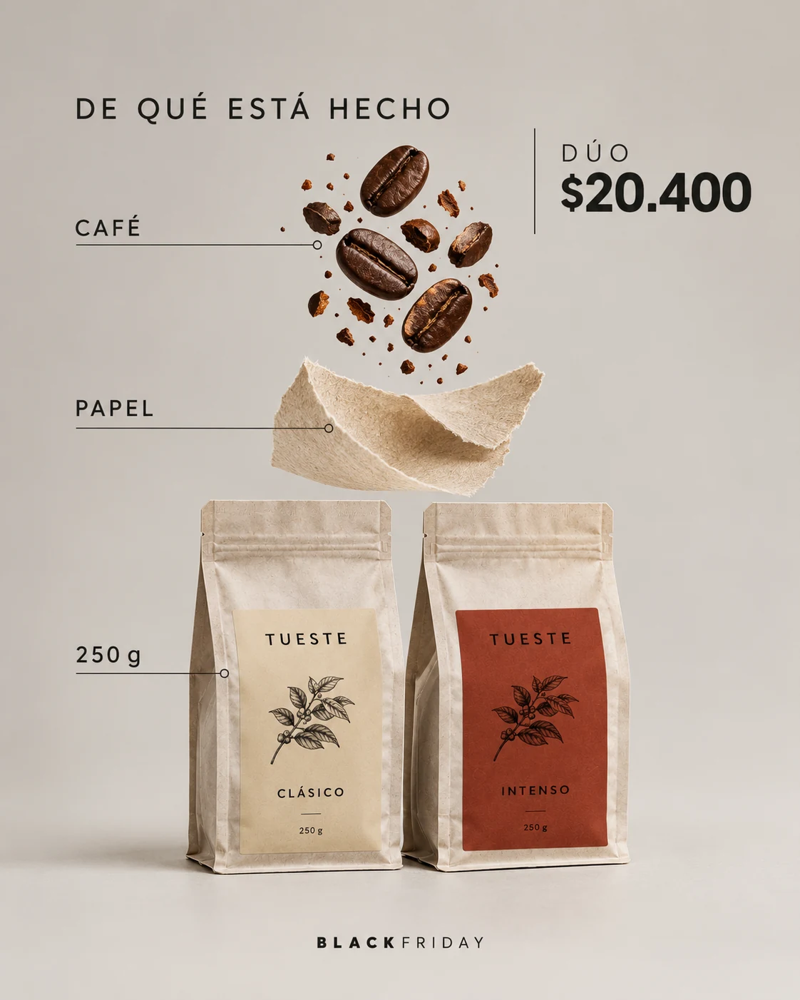
Los componentes forman una columna explicativa.
Materiales de fabricación o ingredientes confirmados.
Foto de producto cerrado y fotos autorizadas de ingredientes/componentes.
Abrir el envase o inventar ingredientes y cantidades.
Descargar referencia visual · Ver referencia original de Pinterest
Descargar instrucciones con promoción · Descargar instrucciones sin promoción
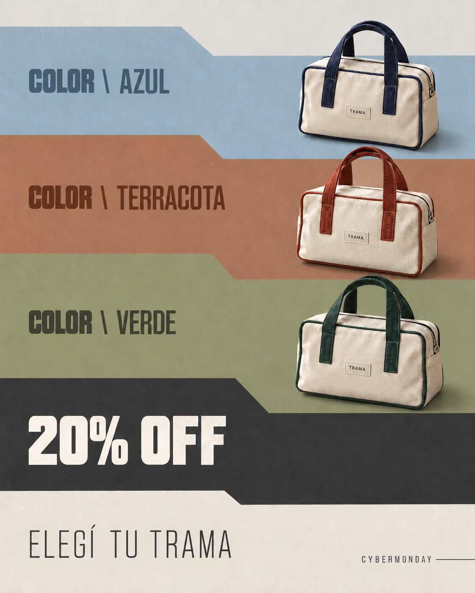
Cada variante tiene su propio territorio cromático.
Elegir color, sabor o modelo disponible.
Una foto por variante real; mínimo tres variantes para que el mecanismo tenga sentido.
Recolorear el mismo producto para inventar variantes.
Descargar referencia visual · Ver referencia original de Pinterest
Descargar instrucciones con promoción · Descargar instrucciones sin promoción
Un set se entiende por sus partes y su orden.
Rutina de cuatro pasos o pack de cuatro piezas.
Foto real de cada pieza del set y secuencia validada.
Hojas deformadas o asignar usos inexistentes.
Descargar referencia visual · Ver referencia original de Pinterest
Descargar instrucciones con promoción · Descargar instrucciones sin promoción
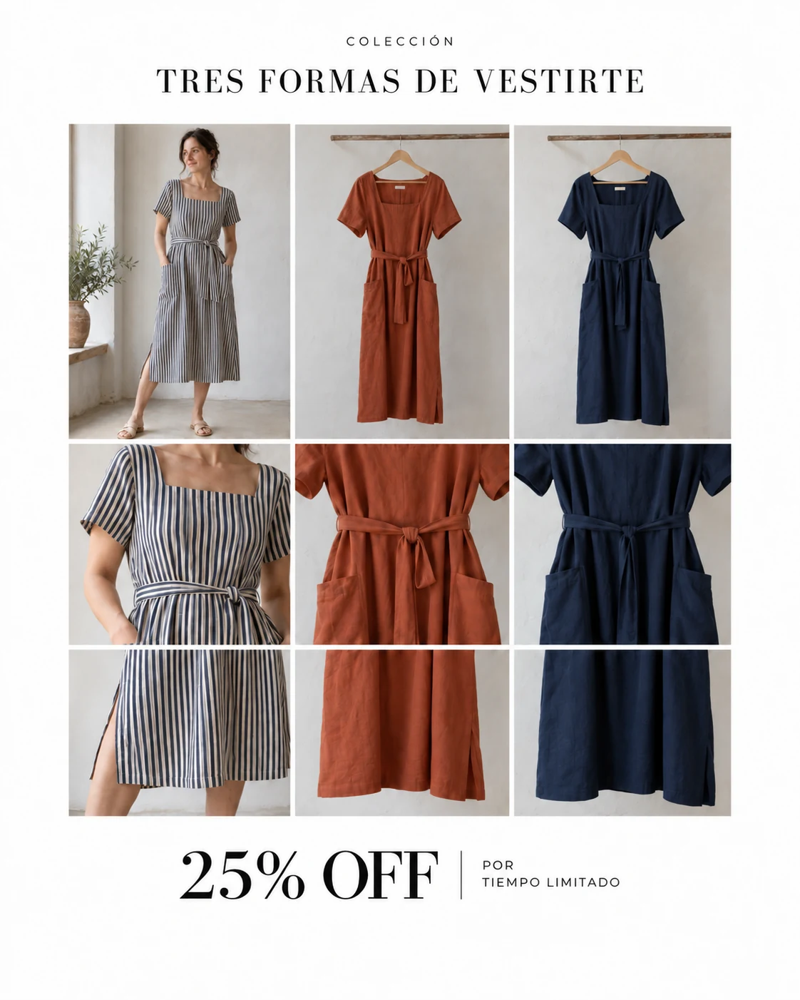
La variedad se descubre mirando.
Mostrar una cápsula de temporada o selección curada.
Tres o más productos reales con varias fotos y detalles autorizados.
Rellenar celdas con artículos inexistentes.
Descargar referencia visual · Ver referencia original de Pinterest
Descargar instrucciones con promoción · Descargar instrucciones sin promoción
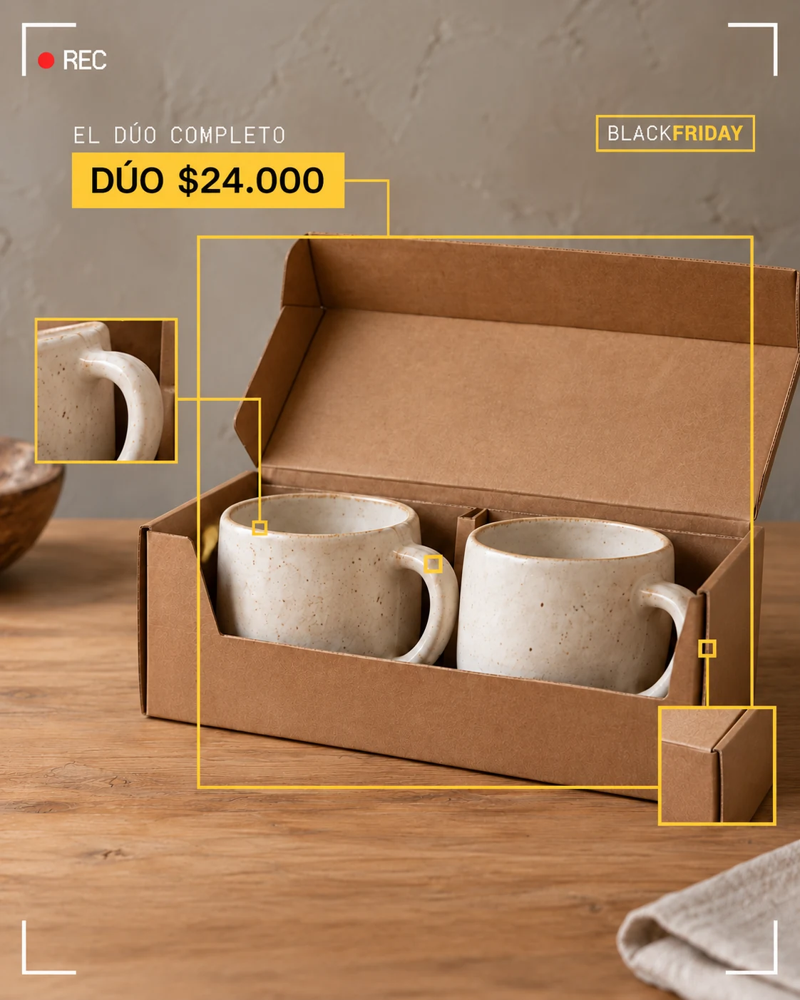
El empaque real demuestra qué incluye la compra.
Regalo listo o bundle con contenido confirmado.
Foto del pack completo con su empaque real.
Inventar bolsa transparente, regalos o entrega lista.
Descargar referencia visual · Ver referencia original de Pinterest
Descargar instrucciones con promoción · Descargar instrucciones sin promoción
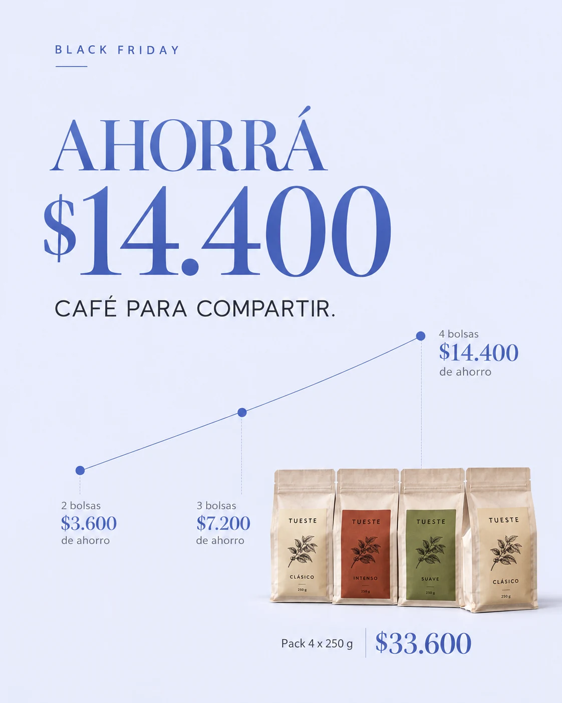
Un dato explicado visualmente, sin exageración.
Ahorro acumulado por cantidad o dato medido con respaldo.
Una foto y tabla de datos reales con unidades y fuente.
Inventar tendencias, estadísticas o escalas engañosas.
Descargar referencia visual · Ver referencia original de Pinterest
Descargar instrucciones con promoción · Descargar instrucciones sin promoción
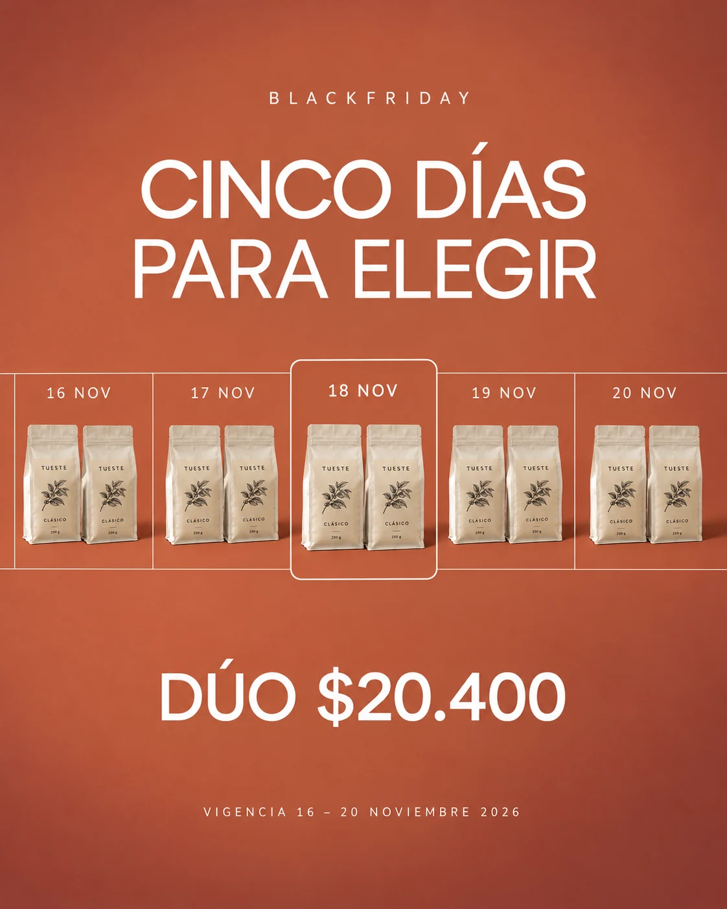
El tiempo se vuelve una secuencia de uso o vigencia.
Rutina real, selección diaria o fecha de cierre real.
Una foto y calendario confirmado; varias fotos si cambia el producto.
Inventar resultados progresivos, escasez o plazo de entrega.
Descargar referencia visual · Ver referencia original de Pinterest
Descargar instrucciones con promoción · Descargar instrucciones sin promoción
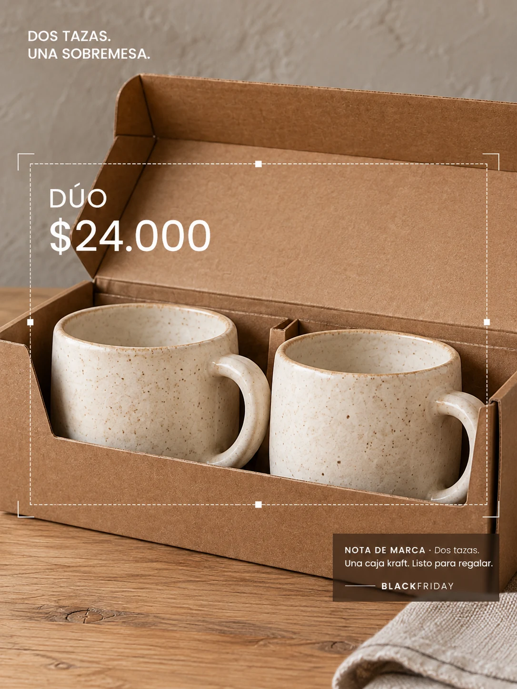
La marca explica el contenido real del pack.
Explicar qué incluye la compra con una nota factual de la marca, sin simular prueba social.
Foto real del producto o pack en contexto y nota factual aprobada por la marca.
Confundir una nota de marca con una reseña o inventar estrellas y clientes.
Descargar referencia visual · Ver referencia original de Pinterest
Descargar instrucciones con promoción · Descargar instrucciones sin promoción
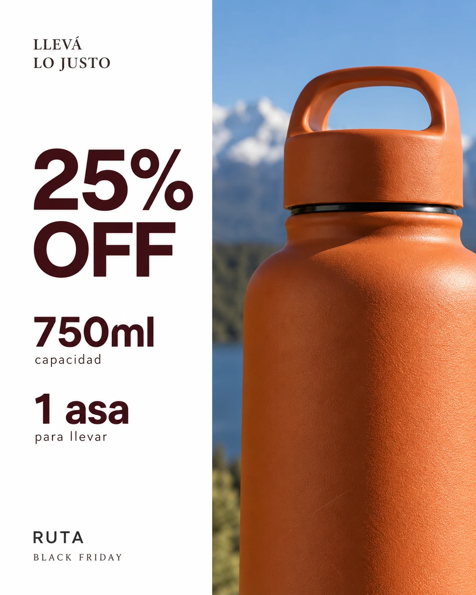
Las especificaciones se vuelven una columna editorial.
Capacidad, medidas, peso o cantidad del contenido.
Foto en uso y tres especificaciones verificadas con unidades. Si no hay foto en uso, mantener la vista original disponible; no inventar una persona ni abrir el producto.
Inventar porcentajes de satisfacción o rendimiento.
Descargar referencia visual · Ver referencia original de Pinterest
Descargar instrucciones con promoción · Descargar instrucciones sin promoción
Una notificación vuelve visible una tarea pendiente.
Regalo y cierre real
Una foto frontal nítida; se repite exactamente el mismo SKU, sin generar variantes.
La repetición puede cambiar la etiqueta. No convertir el recordatorio en una captura real ni afirmar una notificación recibida.
Descargar referencia visual · Ver referencia original de Pinterest
Descargar instrucciones con promoción · Descargar instrucciones sin promoción
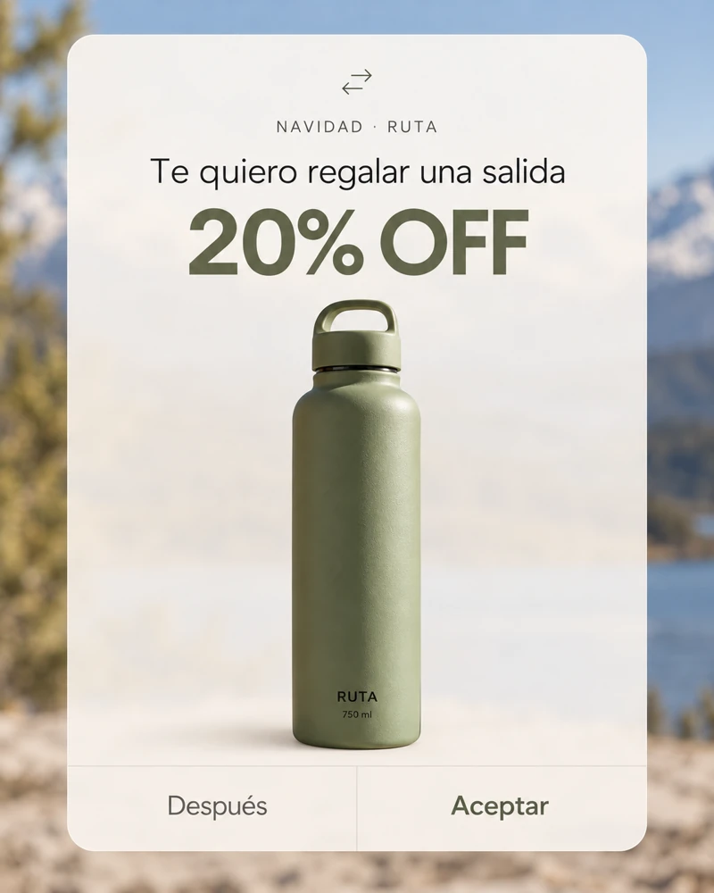
Aceptar o rechazar convierte el regalo en una decisión.
Regalo, selección
Una foto contextual con espacio para el panel; si no hay, dejar el recorte original sobre fondo plano.
No copiar AirDrop, Apple ni logos de sistemas. No poner una lista de cinco beneficios inventados.
Descargar referencia visual · Ver referencia original de Pinterest
Descargar instrucciones con promoción · Descargar instrucciones sin promoción
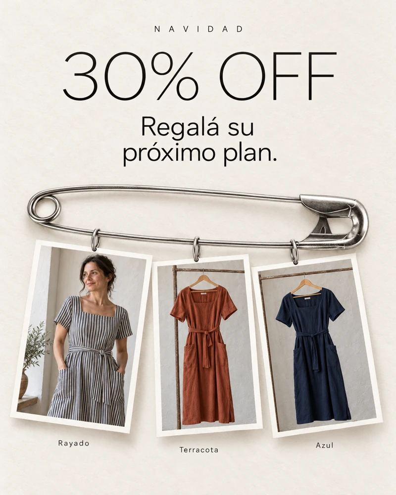
Una selección colgada ayuda a elegir sin llenar la placa de productos sueltos.
Elección de regalos
Fotos reales de cada variante; no alcanza una foto de una sola variante para inventar tres.
El prendedor es un recurso gráfico, no un accesorio incluido. Evitar deformar prendas al componer las tarjetas.
Descargar referencia visual · Ver referencia original de Pinterest
Descargar instrucciones con promoción · Descargar instrucciones sin promoción
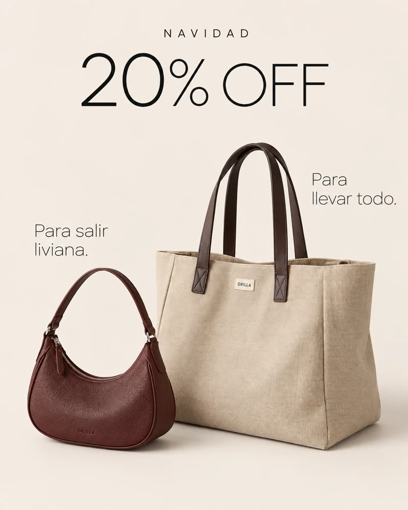
Comparar dos necesidades concretas y mostrar qué producto resuelve cada una.
Pack para compartir
Dos productos reales con usos diferentes; pedir ambas fotografías. No inventar variantes ni venderlos como pack si no lo son.
La herramienta puede alterar proporciones, estampados o cierres. Comparar con la fuente; si cambia, usar montaje del original. No prometer portabilidad universal.
Descargar referencia visual · Ver referencia original de Pinterest
Descargar instrucciones con promoción · Descargar instrucciones sin promoción
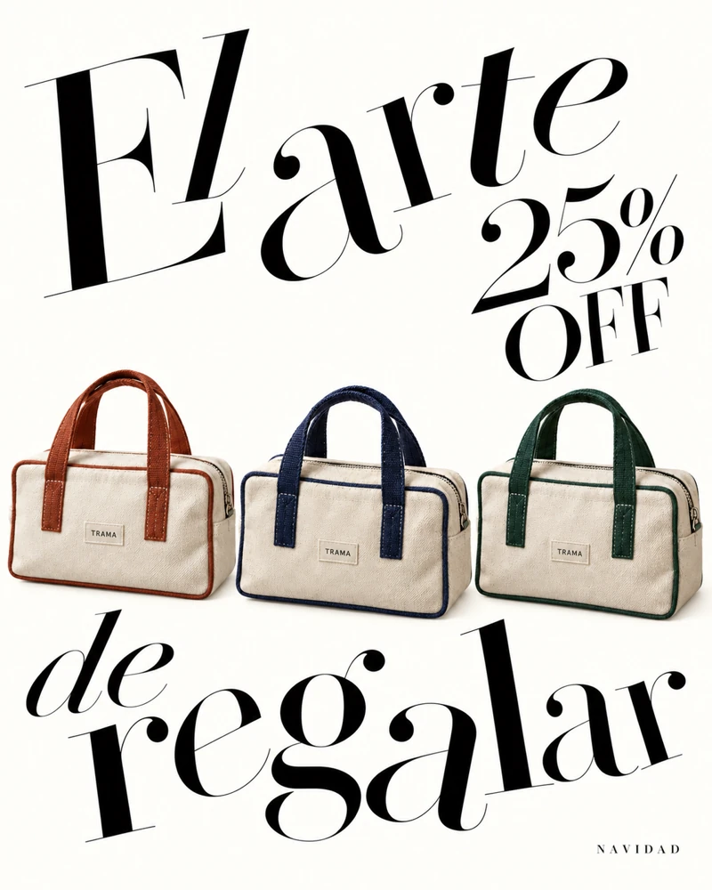
La tipografía se comporta como un objeto editorial alrededor de la colección.
Selección de regalos con carácter
Foto frontal de las variantes reales; recortes intactos.
Rotaciones excesivas pueden impedir leer. No modificar colores, etiquetas ni textiles de los recortes.
Descargar referencia visual · Ver referencia original de Pinterest
Descargar instrucciones con promoción · Descargar instrucciones sin promoción
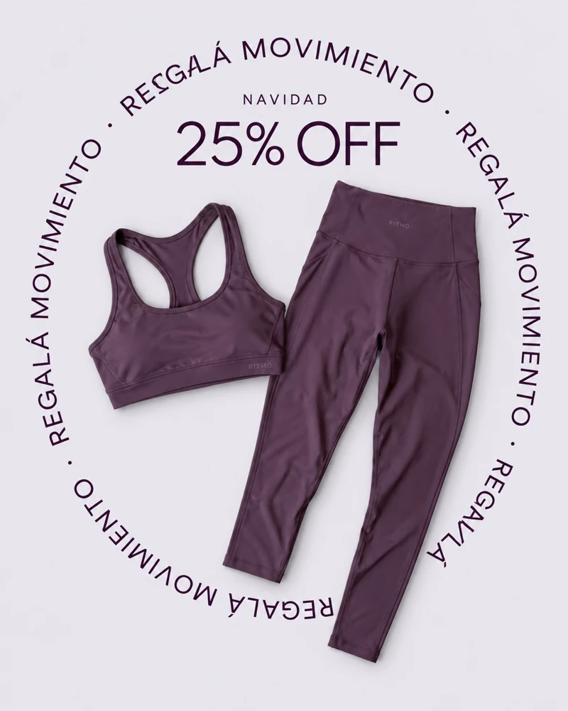
Una frase circular acompaña la forma del producto y expresa la ocasión de regalo.
Pack y regalo
Foto completa del producto o conjunto. No inventar prendas, poses, cuerpo ni manos.
La herramienta puede alterar proporciones, estampados o cierres. Comparar con la fuente; si cambia, usar montaje del original. No prometer portabilidad universal.
Descargar referencia visual · Ver referencia original de Pinterest
Descargar instrucciones con promoción · Descargar instrucciones sin promoción
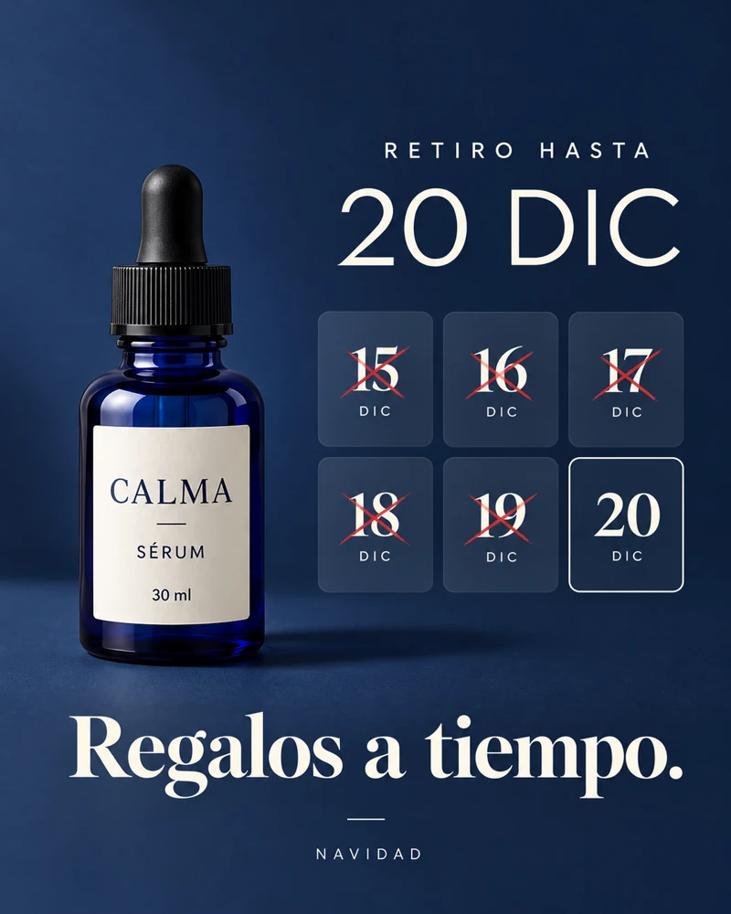
El calendario hace tangible una fecha real de cierre.
Cierre y retiro
Foto frontal del producto y fecha de cierre confirmada.
No inventar stock ni prometer entrega por correo. Confirmar mes, año, día y modalidad.
Descargar referencia visual · Ver referencia original de Pinterest
Descargar instrucciones con promoción · Descargar instrucciones sin promoción
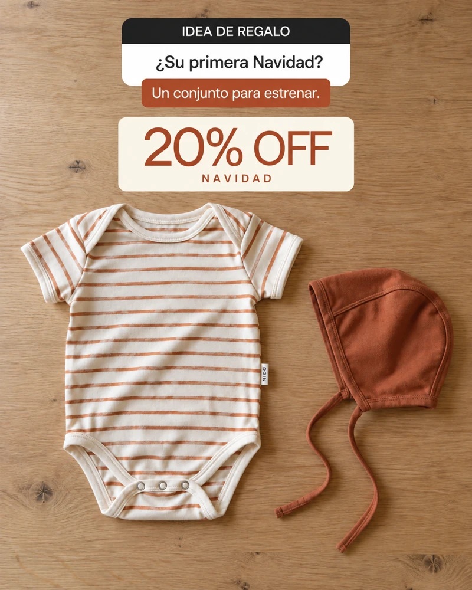
Una pregunta concreta de regalo se responde con el producto disponible.
Regalo para una persona específica
Fotografía contextual del producto; no se necesitan bebés ni personas.
La herramienta puede alterar proporciones, estampados o cierres. Comparar con la fuente; si cambia, usar montaje del original. No prometer portabilidad universal.
Descargar referencia visual · Ver referencia original de Pinterest
Descargar instrucciones con promoción · Descargar instrucciones sin promoción
Probá quitar un filtro o buscar otra palabra.
EXTRA / CUANDO YA TENÉS TU ANUNCIO ESTÁTICO
Tres demostraciones con capas separadas: fotografía, textos y recursos gráficos. Tocá reproducir para ver cada secuencia. Podés descargar el MP4 o mirar su placa estática.
Productos, fotos y ofertas de demostración. Las animaciones reinterpretan las composiciones de las referencias; no son videos originales de Pinterest. Para cambiar el producto hay que preparar sus capas y volver a exportar el video.
Accesorios · TRAMA · 8 segundos · 4:5
Letras con movimientos independientes y desplazamiento lateral de la fotografía. La oferta permanece quieta.
0–2 s: las letras se acomodan. 0–8 s: la fotografía se desplaza suavemente. 2–6 s: pausa de lectura del titular.
Capas: Fotografía completa de los tres productos, letras del titular separadas, oferta fija y evento.
Conservar cada producto completo. No usar morphing, deformar asas ni reconstruir etiquetas.
Referencia original de Pinterest ↗Cosmética · CALMA · 8 segundos · 4:5
Una flecha se dibuja y el resaltador recorre la oferta. La foto del set entra suavemente y queda visible.
0–1,2 s: trazo de flecha y resaltado. 0,5–2 s: entrada suave de la foto. 2–8 s: composición estable para leer.
Capas: Fotografía del set completo, rectángulo resaltador, flecha, titular, oferta fija y evento.
Usar únicamente una oferta real; no copiar la estadística de la referencia. No separar o inventar productos del pack.
Referencia original de Pinterest ↗Indumentaria · 8 segundos · 4:5
Tres ventanas se conectan con la foto original para mostrar escote, bolsillo y terminación de la prenda.
0–0,5 s: foto y oferta. 0,5–1,2 s: primer detalle. 1,8–2,5 s: segundo. 3,1–3,8 s: tercero. 3,8–8 s: lectura completa.
Capas: Foto en uso, tres recortes de esa misma foto, líneas de conexión, oferta fija y titular.
Las ventanas deben mostrar píxeles de la foto aportada. No generar nuevos detalles, estampados o costuras.
Referencia original de Pinterest ↗Primero prepará la composición con tu foto y una oferta real. Después, usá el brief de movimiento en una herramienta de video o un editor con capas. El prompt de una imagen estática, por sí solo, no entrega un MP4.
No. Copiás los datos y adjuntás tus fotos en la herramienta de imágenes. Este recurso prepara las instrucciones y el destino del anuncio; vos configurás la promoción y revisás la tienda.
La colaboración acompaña esta guía. Tu anuncio muestra tu marca, tu producto y tu promoción. Solo incluí Tiendanube en la pieza si forma parte del mensaje que querés comunicar.
DUDAS FRECUENTES
El recurso te ayuda a decidir y preparar los insumos. La generación ocurre en la herramienta de imágenes que uses.
Podés empezar con una foto clara del producto. Para variantes, packs o detalles, la ficha indica qué otras fotos hacen falta. No inventamos vistas ni accesorios que no se ven.
No: adjuntá la referencia descargada y tu foto original. Sumá la oferta y sus condiciones. Si el producto o el texto cambian, usá la corrección de la ficha o montá el original.
Este recurso es gratuito. Necesitás una herramienta que admita imágenes de referencia y generación o edición; su disponibilidad, límites y costo dependen del servicio que elijas.
No. Te da caminos creativos y un criterio para revisarlos. Oferta, tienda, inversión y contexto influyen en los resultados. Definí qué querés aprender con cada anuncio y anotá los resultados.
¿TODAVÍA NO TENÉS TIENDANUBE?
Podés recorrer esta guía y conocer el proceso antes de crear tu tienda. Cuando tengas tu Tiendanube, cargá el producto, sus fotos y la promoción; después volvé al formulario para preparar los anuncios.
Crear mi Tiendanube ↗Este es mi enlace de afiliada. Puedo recibir una comisión si contratás a través de él. Consultá los planes y las condiciones vigentes en Tiendanube.
Primero quiero ver cómo funciona ↗